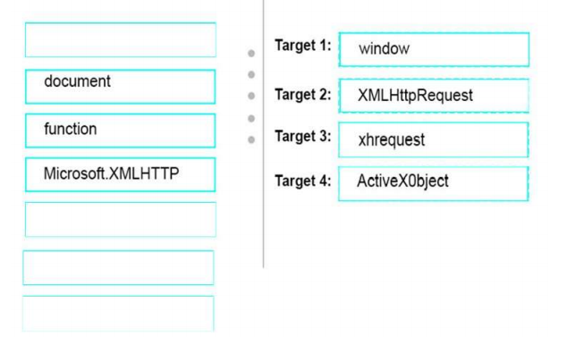

QUESTION 277
You are writing a jQuery function that makes an Ajax request to a remote server.
You need to ensure that if Ajax communications are unsupported by a browser, an error is thrown.
You write the following code.
How should you complete the code? To answer, drag the appropriate code elements to the correct targets.
Each code element may be used once, more than once, or not at all. You may need to drag the split bar
between panes or scroll to view content.
NOTE: Each correct selection is worth one point.
Solución: ERRATA

Solución: CORRECTA
Nota: con window.XMLHttpRequest comprobamos que el navegador admite XMLHttpRequest
en caso afirmativo request = new XMLHttpRequest ();
la errata es request = new ActiveXObject
si quieres saber que era ActiveXObject aqui tienes algo de información
https://uniwebsidad.com/libros/ajax/capitulo-7/la-primera-aplicacion....